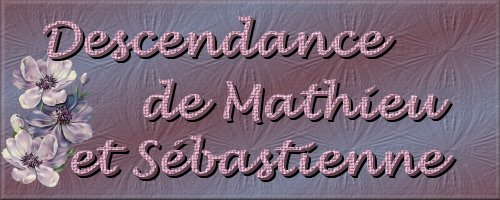
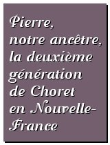

|


| |
| |
|
 |
|
Mathieu
Choret et Sébastienne Veillon ont eu sept enfants, six fils dont des
jumeaux, et une fille. Fait rare pour l'époque, leurs enfants se sont
tous rendus à l'âge adulte.
Mathieu
et Sébastienne ont ensuite eu près de
soixante-quinze petits-enfants.
C'est ce
qu'on peut appeler une descendance nombreuse.
Voici les
enfants de Mathieu et Sébastienne: |
|

|
| Robert, né le 7 juin 1648 à Québec est
ondoyé par son père. À son baptême ses parrains sont Robert
Hache, l'ami et compagnon de travail de son père chez les Jésuites, et
Barbara Reboux.
Robert se marie le 22 avril 1674 à
Québec avec Madeleine Paradis née le 12 janvier 1655 à
Québec. Ils ont six enfants lorsque Madeleine décède le 2
septembre 1684 à Québec. Ces enfants épouseront des Le Normand,
Rainville, Marcoux, Duquet et Lemire.
Au recensement de 1681 Robert et sa
famille sont inscrits comme habitant St-Laurent, île d'Orléans.
Son métier est charpentier et il réside sur une terre près de celle
de son beau-père Pierre Paradis. Il a un fusil, sept bêtes à
corne et quinze arpents de terre en valeur.
On trouve plusieurs contrats notariés
où Robert Choret s'engage comme menuisier, à la construction de la
cathédrale de Québec par exemple, ou prête de l'argent ou achète des
terrains. Par exemple en 1700 il achète la terre de sa nièce
Françoise (fille de Joseph Choret) à St-Pierre, île d'Orléans.
On retrouve aussi son nom dans des jugements du Conseil Souverain.
Robert se remarie le 7 février 1686 à
Québec avec Marguerite Le Rouge. Ils ont onze enfants qui
s'uniront à des Martin, Massé, Lemay, Auger, Grenier,
Lemire, Biron, Petit. Plusieurs vivront dans la région de
Lotbinière.
En effet, Robert a migré vers cette
région, plus particulièrement à Ste-Croix, au début du 18ème
siècle. Ses trois derniers enfants y naissent entre 1700 et
1705.
Le 5 avril 1701 Robert achète à la
veuve de Mathieu Amiot la seigneurie Pointe-aux-Bouleaux près de
Ste-Croix de Lotbinière. Il doit en laisser le quart à Charles
Amiot par jugement de la Prévoté de Québec le 14 mai 1708 et vend le
reste à Pierre-Noel Le Gardeur le 21 août 1714.
Robert décède le 15 juin 1716 à
Ste-Croix à l'âge de 68 ans.
|
|

|
À
noter que Jean Charest, premier ministre du
Québec, est un descendant de Robert Choret et de sa seconde épouse. lien
vers son arbre généalogique
|
 |
|

|
| Joseph, né le 14 août 1650 à Beauport, est ondoyé par Robert
Giffard. Baptisé le 8 septembre 1650 à Beauport, ses parrains
sont Robert Giffard, Seigneur de Beauport, et Marie-Françoise de
Clément de Vrault.
Joseph est confirmé le 5 mai 1662 par Mgr de Laval.
Il se marie le 29 octobre 1676 à Ste-Famille, île d'Orléans, avec Anne
Loignon, née en 1653.
Au recensement de 1681 Joseph est inscrit avec sa famille comme
habitant St-Laurent, île d'Orléans. Il possède un fusil, quatre
bêtes à corne et quinze arpents de terre en valeur.
Joseph a trois enfants, ils vivront à St-Pierre, île d'Orléans,
et deux d'entre eux épouseront des Costé et des Trudel. La
troisième deviendra religieuse à l'Hôpital Général de Québec.
Joseph décède le 28 octobre 1684 à l'Hôtel-Dieu de Québec, dans
la salle des pauvres et est enterré dans le cimetière des pauvres du
dit hôpital. Il a 35 ans.
La veuve de Joseph, Anne Loignon, épouse en secondes noces Antoine
Paulet le 13 février 1685. Elle décède le 25 novembre 1722 à
St-Pierre. En 1700, une partie de la terre qui avait appartenu
à Joseph, à
St-Laurent île d'Orléans, servit pour la construction de l'église de cette paroisse.
|
|
|
| Jeanne, née le 11 décembre 1652, est
immédiatement ondoyée chez ses parents et baptisée le 12 janvier 1653 à
Québec par le père Ragueneau, supérieur des Jésuites, qui enregistre
l'acte à Québec. Ses
parrains sont Robert Drouin et Jeanne Brant. Jeanne se marie le 14 janvier 1669 à Jean Moricet né
le 18 août 1641 à Saint-Gilles-de-Surgères, un bourg situé à
environ 30 km à l'est de La Rochelle. Le mariage
a lieu dans la chapelle de Beauport et est officié par Thomas Morel,
prêtre missionnaire jésuite du Séminaire de Québec. Les
témoins sont Paul Vachon, le notaire de la famille Choret, et deux
habitants de Beauport.
Au recensement de 1681, le couple a trente arpents de terre en
valeur.
Ils ont quatorze enfants tous nés à Ste-Famille, île d'Orléans.
Jean Moricet décède le 15 août 1699 à Ste-Famille. Jeanne
ne se remarie pas, elle semble à l'aise financièrement et ses enfants
peuvent la soutenir.
Jeanne décède le 26 septembre 1718, à l'âge de 66 ans.
Les enfants de Jeanne feront alliance avec les Asselin, Létourneau, Clément, Catrin, Simon. Trois d'entre eux épouseront des
Cloutier, et une des filles épousera un Loignon, soit Charles Loignon, le
frère de sa tante Jeanne, épouse de Joseph Choret. |
|

|
À noter que Claude Comtois,
conjoint de Francine Charette, descend aussi de Mathieu Choret, mais par
sa fille Jeanne.
|
|
|
|

|
| Pierre l'aîné, un des
jumeaux, est né
le 17 janvier 1655 à Québec. Il est baptisé en mars 1655, aucun
parrain n'est mentionné dans le certificat de naissance. Pierre se marie le 21 janvier 1686 dans la chapelle de Beauport avec Madeleine
Giroux, après avoir passé un contrat rédigé par le notaire Paul
Vachon. C'est un mariage double puisque son frère, Pierre le Cadet, se marie également le même jour, au même
endroit.
Pierre a plus de dix enfants mais plusieurs meurent en bas
âge. Un enfant né en 1696 a comme parrain Pierre Vachon, le fils
du notaire de la famille. En 1699, la dernière née a comme
parrain le Sieur Ignace Juchereau du Chesnaye et sa soeur Louise, épouse du capitaine des
troupes du pays, Alexandre de l'Estringan. Cette enfant se mariera
à Charlesbourg et décèdera à Montréal en 1764. Ignace
Juchereau du Chesnaye est le petit-fils et héritier de Robert Giffard,
Seigneur de Beauport. Par son épouse il hérite aussi de la
seigneurie de Fossambault.
Les enfants de Pierre feront alliance avec les Imbeault, Cliche,
Jobin, Rotureau, Sarrasin.
Pierre décède le 27 juillet 1701 à l'Hôtel-Dieu de Québec, à
l'âge de 46 ans.
Sa veuve se remarie le 10 janvier 1705 à Charlesbourg
avec Maurice Rhéaume.
|
|

|
| Ignace, né le 17 janvier
1655, est baptisé le 29 août 1655 à Québec, donc plusieurs mois
après son frère jumeau. Pourquoi? Peut-être
sépare-t-on les
jumeaux suite à leur naissance, leur mère ne
pouvant les nourrir tous les deux. Ignace a pu être mis en
nourrice et on le baptise lorsqu'il revient dans la famille. C'est une hypothèse plausible, il me semble.
Ignace se marie à Beauport le 26 novembre 1685 avec Marie Bélanger.
Il est cordonnier et cultivateur à Beauport.
Ignace a cinq enfants, tous nés à Beauport. Ils épouseront des
Ferré, Petit, Laurent, Beaugis, Picher. Le dernier né en 1698
épousera une Beaugis parente avec sa tante, l'épouse de Pierre le
cadet.
Ignace décède à 46 ans, le 6 octobre 1701, à l'Hôtel-Dieu de
Québec, donc quelques mois après son frère jumeau Pierre l'aîné.
Les deux jumeaux de Mathieu et Sébastienne meurent la même année,
à moins de trois mois d'intervalle.
Sa veuve se remarie le 9 novembre 1705 à Beauport avec
Jacques Parent.
|
|
|
| Jean, né le 27 novembre
1657, est baptisé à Québec le 9 décembre 1657. Ses parrains
sont Jean Le Vasseur et Marie Lelart.
Jean se marie le 30 octobre 1684 avec Claire Baucher à
Ste-Famille, île d'Orléans. Dans l'acte de mariage passé devant
le notaire Paul Vachon, Jean dit habiter St-Pierre, île d'Orléans.
Ses huit enfants s'allieront aux Ouellet, Boissonneau, Lepage,
Liénard,
Lis, Roussin, Ricosse. Certains vivront à Neuville, d'autres à
St-Vallier dans Bellechasse.
Jean décède le 6 juin 1699, toujours à St-Pierre, île d'Orléans,
il a 42 ans..
|
|

|
| Pierre le Cadet, né le
21 janvier 1662, est baptisé dans la chapelle de Beauport. Il s'y marie, en même temps que son frère Pierre l'aîné, le
21 janvier 1686 à Marie-Anne Beaugis, née le 27 janvier 1669 à
Québec. Ils ont passé un contrat de mariage devant le
notaire Paul Vachon. Leurs témoins au mariage sont le notaire et Robert
Choret, frère aîné de Pierre. Les mariés ne savent pas
signer. À noter que Robert va lui-même se remarier en deuxième noce quelques jours
plus tard, soit le 7 février. 
Pierre le Cadet a dix-huit enfants. Ils sont tous nés à
Beauport, mais plusieurs migreront vers la région de Montréal où ils se
marieront. Ils feront alliance avec des Turcot, Brault, Chrétien,
Roy, Huppé, Magnan , Maurier, Martin, Gauthier, Rapidiou, Larouche,
Bouthillet, Trottier, Maheu, Taillon.
Pierre le Cadet décède le 5 mai 1736 à Beauport, à l'âge
de 74 ans. Avec lui s'éteint le dernier membre de la
première génération de Choret née en Nouvelle-France. Près de
quatre-vingt-dix-ans s'étaient écoulés depuis que ses parents s'y
étaient installés en 1647.
Nous descendons de Pierre le
Cadet.
Apprenez à mieux le connaître en visitant le site qui lui est
consacré. Vous y accéderez en cliquant sur le lien "les 14
générations" en haut de la page.
|
|
|